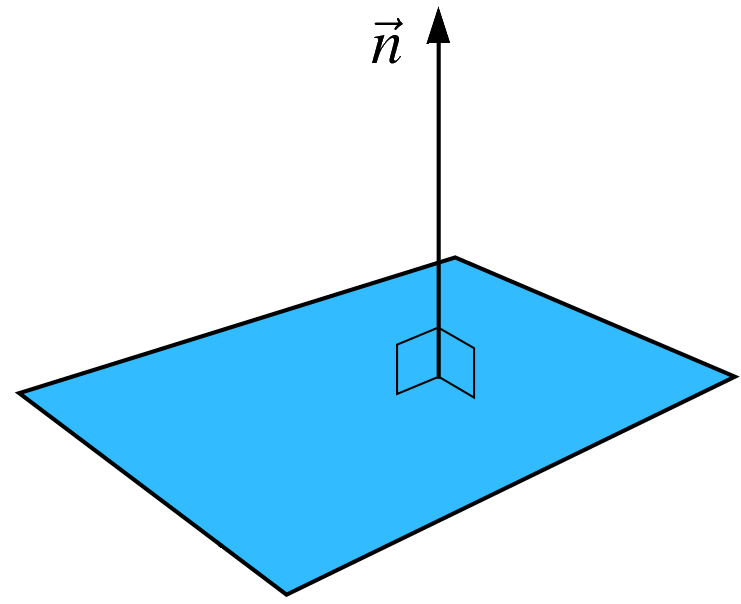
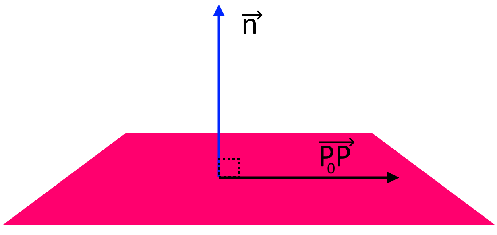

Planes in \mathbb{R}^n
Contents
4.8. Planes in \(\mathbb{R}^n\)#
4.8.1. Normal Vector#
A nonzero vector \(n\) is called a normal for a plane if it is orthogonal to every vector in the plane.
\(\vec{n}\) (a nonzero vector in \(\mathbb{R}^n\)) is called a normal vector to a plane if and only if
for every vector \(\vec{v}\) in the plane. This means that \(\vec{n}\) is perpendicular to every point on that plane.
{kind=link}
Let \(P_0\) on a plane with the normal vector \(\vec{n}\). Any point \(P\) on this plane can be expressed as follows,
This is called the vector equation of a plane.
{kind=link}
In \(\mathbb{R}^3\), the plane that contains point \(P_0=(x_0,~y_0,~z_0)\) and has the normal vector \(\vec{n} =(a,~b,~c)\neq 0\) is given by
A point \(P=(x,~y,~z)\) is on a plane if and only if \(x\) , \(y\) , and \(z\) satisfy its vector equation.
Example: Find an equation of the plane containing \((1,-1,0)\) and orthogonal to \(\begin{bmatrix} \pi & 0 & 3 \end{bmatrix}^T\).
Solution: Here \(P_0=(1,-1,0)\) and \(\vec{n} =(\pi,0,3)\)
4.8.2. Scalar Equation of a Plane#
Let \(\vec{n} = \begin{bmatrix} a & b & c \end{bmatrix}^T\) be the normal vector for a plane which contains the point \(P_0 = (x_0,~y_0,~z_0)\). Then, the scalar equation of the plane for any arbitrary point \(P = (x,~y,~z)\) on the plane is given by
where \(a,~b,~c,~d \in \mathbb{R}\) and \(d = ax_0 +by_0 +cz_0\).
Example: Let \(A = (0,0,1)\), \(B = (2,0,-1)\) and \(C = (0,1,0)\) be points in \(\mathbb{R}^3\). Find an equation for the plane containing \(A\), \(B\), and \(C\).
Solution: The scalar equation of the plane is given by \(ax+by+cz = d\) where \(a,~b,~c,~d\) are to be determined. To find \(a,~b,~c,~d\), we use points \(A\), \(B\) and \(C\). We have
The augmented matrix of this system is given by
:badge:`In RREF:,badge-primary`
Therefore,
Letting \(t=1\),
Therefore,
Refrences
Kuttler, Kenneth. “A First Course in Linear Algebra (Lyryx).” (2018).
Nicholson, W. Keith. “Linear Algebra with Applications (Lyryx).” (2018).